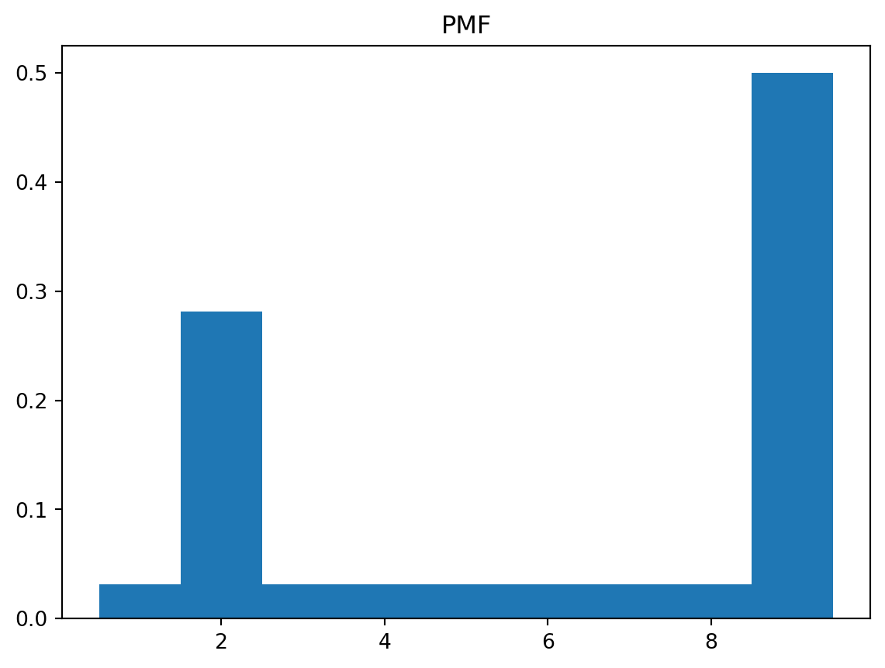
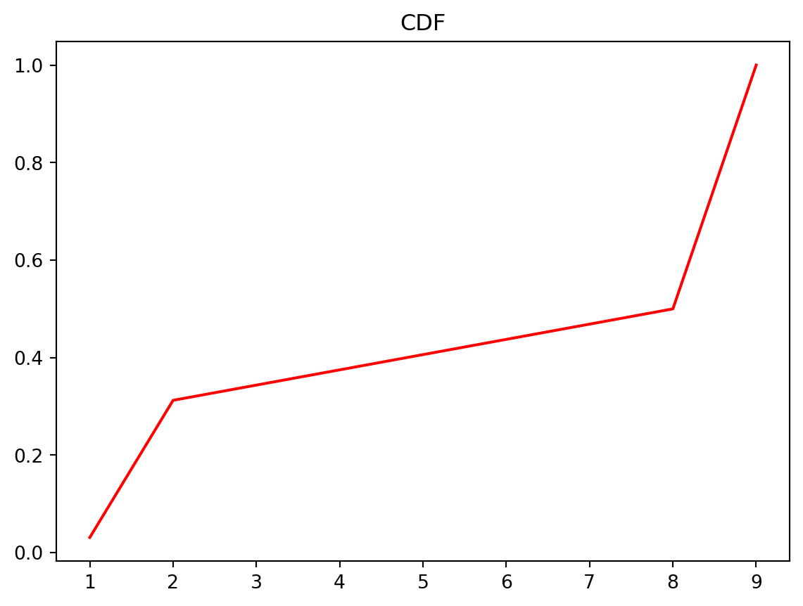
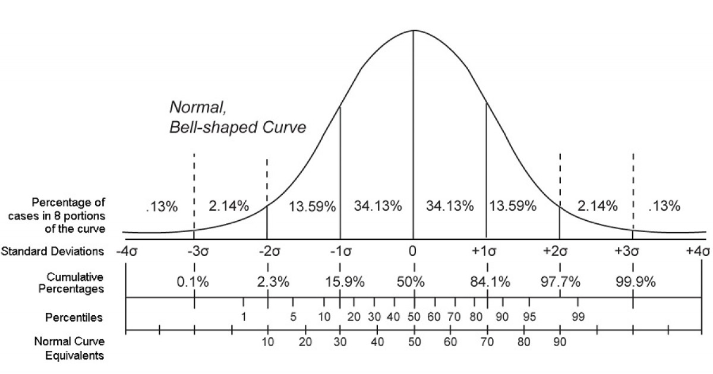

Bir veri kümesi düşünelim. Öyle ki 1’den 300’e kadar tam sayılardan oluşmuş rastgele 5000 sayıdan oluşsun. Bu verinin olasılık kütle fonksiyonunu çizelim.
import numpy as npimport pandas as pdimport matplotlib.pyplot as pltveri1 = pd.Series(np.random.randint(1,300,5000))# Frekans değerlerini hesapla ve normalize et.veri1_pmf= veri1.value_counts()/len(veri1)print(veri1_pmf)# PMF çizilirken bar grafiği kullanıyoruz.# Yatay eksen elde edilen frekansların etkietleri (index)# Düşey eksen normalize edilmiş frekans değerleriplt.bar(veri1_pmf.index, veri1_pmf, width=1)
300 adet sayının gelme olasılığına baktığımızda herhangi bir sayının gelme olasılığı yaklaşık \(1/300\) olmaktadır.
Bu grafikte her bir sayının gelme olasılığını hesaplayıp çizmek yerine gelme olasılıklarını toplayarak da çizebiliriz. Yani kümülatif olarak da çizebiliriz. Önce 1’in gelme olasılığı bulunur. Ardından 2’nin gelme olasılığına 1’in gelme olasılığını ekleyeceğiz. Sistematik işlemleri aşağıdaki gibi yapılır.
Önce veri kümesini küçükten büyüğe doğru sıralayalım.
Her bir sayının gelme olasılığını hesaplayalım.
Bu olasılıkları birbirine ekleyerek kümülatif olasılık fonksiyonunu (cumulative distribution function, CDF) elde ederiz.
import numpy as npimport pandas as pdimport matplotlib.pyplot as pltveri1 = pd.Series(np.random.randint(1,300,5000))# Frekans değerlerini hesapla.veri1_norm= veri1.value_counts()/len(veri1)# PMF çizilirken bar grafiği kullanıyoruz.plt.title("PMF")plt.bar(veri1.value_counts().index.astype(float), veri1_norm, width=1)plt.show()plt.close()# Kümülatif dağılım fonksiyonu# Sıralaveri1_norm.sort_index(inplace=True)print(veri1_norm)# Kümülatif toplamveri1_norm_cum = veri1_norm.cumsum() # cumsum() fonksiyonu kümülatif toplamı verir.# Çizdirplt.title("CDF")plt.plot(veri1_norm_cum, 'r')plt.show()plt.close()
import numpy as npimport pandas as pdimport matplotlib.pyplot as pltveri1= pd.Series([1,2,2,2,2,2,2,2,2,2,3,4,5,6,7,8,9,9,9,9,9,9,9,9,9,9,9,9,9,9,9,9])# Frekans değerlerini hesapla.veri1_norm= veri1.value_counts()/len(veri1)# PMF çizilirken bar grafiği kullanıyoruz.plt.title("PMF")plt.bar(veri1.value_counts().index.astype(float), veri1_norm, width=1)plt.show()plt.close()# Kümülatif dağılım fonksiyonu# Sıralaveri1_norm.sort_index(inplace=True)# Kümülatif toplamveri1_norm_cum = veri1_norm.cumsum() # cumsum() fonksiyonu kümülatif toplamı verir.# Çizdirplt.title("CDF")plt.plot(veri1_norm_cum, 'r')plt.show()plt.close()


Yüzdeler (Percentiles)
Yüzde Sıralama (Percentile Rank) : Bir veri kümesindeki değerlerin yüzde kaçının bu değerden küçük olduğunu gösteren değerdir.
Örneğin bir test yapılsın. Sonucunuz \(67/90\) olsun ve yüzde 20’lik dilimde (in the 20th percentile) olduğunuz size söylendi. Bu durumda sizin puanınız insanların yüzde 20’sinden daha iyi demektir. Ama yeriniz yüzde 20’de olduğu için sınıfın yüzde 80’inin notu sizden daha iyi.
Yüzde 50’lik dilimde (in the 50th percentile) olmak, medyan değerine eşdeğerdir.
Yüzde 25’lik dilimde (in the 25th percentile) olmak, ilk çeyreğe eşdeğerdir.
Yüzde 75’lik dilimde (in the 75th percentile) olmak, üçüncü çeyreğe eşdeğerdir.
İlk çeyrek ile üçüncü çeyrek arasındaki farka çeyrekler arası (interquartile range) denir.

Yuzdeler, Standart Sapmalar, Kümülatif Yüzdeler [1]
Yüzde Sıralama (Percentile Rank)
Bir veri kümesindeki değerlerin yüzde kaçının bu değerden küçük olduğunu gösteren değerdir. Yukarıdaki örnekten devam edelim.
Yüzde 20’lik dilimde iseniz sizin yüzde sıralamanız 20’dir. Yani sınıftaki öğrencilerin yüzde 20’sinden daha iyi not almışsınız demektir.
Kümülatif Dağılım Fonksiyonu ve Yüzde Sıralama
Kümülatif dağılım fonksiyonuna bakarak yüzde sıralamayı bulabiliriz.
Kümülatif dağılım fonksiyonunu çizdirirken x-eksenindeki değerler veri kümesindeki değerler olmalıdır. y-eksenindeki değerler ise o değerden küçük olan değerlerin sayısı olmalıdır. Örneğin, y-eksenindeki değer 0.25 olduğunda, x-eksenindeki değer 5 ise bu, veri kümesindeki değerlerin 5’ten küçük olanların sayısının 0.25 olduğunu gösterir.
Problemler
Problem 1
Rastgele 1000 adet normal dağılımda sayı üretin ve histogramını (bin=50 olsun) siyah olarak çizdirin.
Bu dağılımın yüzde 50’lik dilimine (np.percentile()) mavi bir çizgi (plt.axvline()) çizin.
Bu dağılımın ilk ve son çeyreğine düz yeşil bir çizgi çizin.